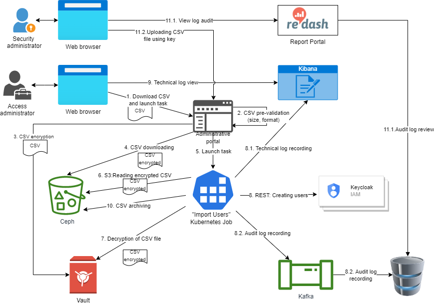

Importing users into Keycloak
| 🌐 This document is available in both English and Ukrainian. Use the language toggle in the top right corner to switch between versions. |
The Platform offers a valuable feature to efficiently add numerous officer users to the registry at a time. You can easily import these users into Keycloak directly from a CSV file.

-
The Access administrator, using the web interface of the administrator portal, downloads a CSV file containing a list of users to import into the registry.
-
The administrative portal makes the initial validation of the downloaded file: size, format, and encoding. In case of a validation error, the user sees a message with the error details on the file download page. The user import process stops.
-
In case of successful initial validation,
-
The encrypted file is stored in the registry object store (Ceph).
-
The administrative portal starts importing users into KeyCloak ("Import Users" Kubernetes job).
-
Using the Kubernetes service account, the process gets credentials to access the Ceph object store and reads the encrypted CSV file from there. In this case, the file is moved to the archive in Ceph.
-
The process decrypts the file using Vault and retrieves user data for import.
-
The process starts processing the data in the file and creates users in KeyCloak using the administrative REST API (partial Import API). Users are created in groups of m records. The value of m is set in the process settings. All attributes from the file are set for a user, and the appropriate roles are assigned. The value of the username field is generated automatically and contains the SHA-256 hash of the sum of the string formed as the result of concatenation of 3 key attributes of a user: fullName, edrpou, drfo. And the order of the attributes is essential.
-
The technical log of the process is written to the Kibana technical log repository.
-
The audit of the logging process (which users are created, and who created them) is recorded to the corresponding Kafka topic from where it enters the audit database.
-
-
The access administrator can view the result of the import process and possible errors in the technical logs using the web interface of the Kibana service. In case of errors, their cause must be eliminated, and the import process has to be repeated.
-
Upon completion of the import process, if at least one user has been created, the CSV file used for importing is moved to the archive where it is stored for audit purposes and is no longer processed.
-
Also, if necessary, the Security administrator has the opportunity to view the process audit log containing information about created users (user ID, creation time, ID of the incoming CSV file and its hash), and download the CSV file used for importing the user.
1. Audit
All information about users created during the importing process must get to the platform audit, where the Security Administrator can view it.
To add information about an event to the audit, generating a message according to the scheme and writing it to the Kafka audit-events topic is necessary.
Message structure:
| Parameter name | Parameter value |
|---|---|
requestId |
Request ID from MDC |
name |
"USER_CREATE" |
applicationName |
"Keycloak" |
sourceSystem |
- |
sourceApplication |
Name of the import job |
sourceBusinessProcess |
- |
sourceBusinessProcessDefinitionId |
- |
sourceBusinessProcessInstanceId |
- |
sourceBusinessActivity |
- |
type |
"SYSTEM_EVENT" |
timestamp |
Time stamp |
userName |
Full name of the user who started the import process |
userKeycloakId |
Keycloak ID of the user who started the import process |
userDrfo |
DRFO code of the user who started the import process |
context |
JSON containing deltane information about the newly created user |
| The quoted values are the same for all events of this type and are set as values of the corresponding unchanged attributes. "-" corresponds to an empty value. |
The context field structure:
| Parameter name | Parameter value |
|---|---|
userId Keycloak |
ID of a created user |
username |
username of a created user |
enabled |
true/false |
realmId |
Keycloak identifier of the realm where a user was created |
realmName |
Name of the realm where a user was created |
clientId |
The "Client ID" value of the realm attribute on behalf of which a user was created |
keycloakClientId |
Keycloak client id on behalf of which a user was created |
roles |
Roles of the created user |
sourceFileId |
CSV file ID in the Ceph bucket |
sourceFileName |
Name of the original CSV file used for importing users |
sourceFileSHA256Checksum |
Checksum of the CSV file uploaded by the user (non-encrypted) |
Example of the context field value
{
"userId":"946693c7-181f-41c3-88e8-fcca20962b6a",
"username":"anna.perez",
"enabled":true,
"realmId":"de972f63-9a2a-47b4-bb18-aa84dd7423fa",
"realmName":"dev-officer-portal",
"clientId":"import-users-job",
"keycloakClientId":"8f123b53-6745-4162-a19e-85659bbc76c6",
"roles":[
"officer",
"head-officer"
],
"sourceFileId":"9a07c7cd-a1cd-4fdf-8d93-fab6a0988369",
"sourceFileName":"users.csv",
"sourceFileSHA256Checksum":"a3d08b7833480e561f99cd1180e76fea13baedd59d726eacf2af30643678e968"
}| You can find the general information about the audit structure in the section "Platform/Technical Documentation/Subsystems/Data Factory/Event Audit" |